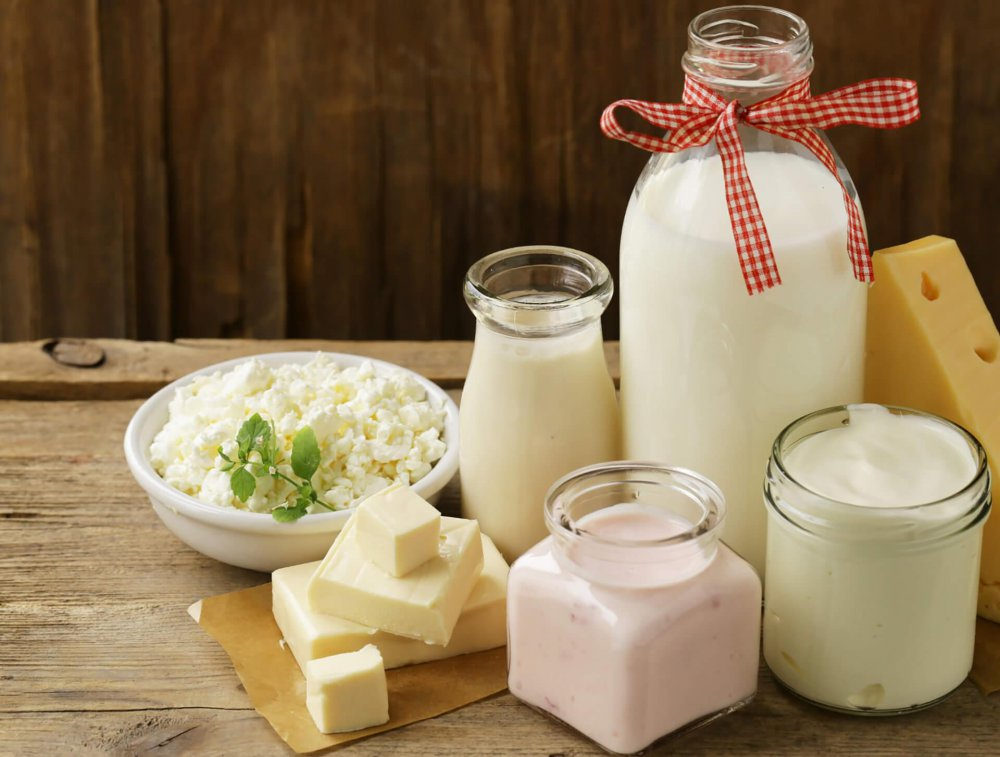

Besin Kategorileri
Sağlıklı beslenme için önerilen besin grupları ve özellikleri
Besin Kategorileri
Protein Kaynakları
- Yağsız et ve kümes hayvanları
- Balık ve deniz ürünleri
- Yumurta
- Süt ürünleri
- Baklagiller
- Tofu ve soya ürünleri
- Kuruyemişler
Günlük protein ihtiyacınızı karşılamak için her öğünde protein içeren besinler tüketmeye özen gösterin.
Sebze ve Meyveler
- Koyu yeşil yapraklı sebzeler
- Turuncu ve kırmızı sebzeler
- Turunçgiller
- Çilek ve böğürtlenler
- Domates ve brokoli
- Lahana ve karnabahar
- Havuç ve balkabağı
Günde en az 5 porsiyon sebze ve meyve tüketmeye çalışın. Renkli sebze ve meyveler antioksidan açısından zengindir.

Tam Tahıllar
- Tam buğday ekmeği
- Kahverengi pirinç
- Yulaf
- Kinoa
- Bulgur
- Arpa
- Karabuğday
Tam tahıllar lif açısından zengindir ve sindirim sistemini destekler. Günlük beslenmenizde tam tahıllara yer verin.

Süt Ürünleri
- Süt
- Yoğurt
- Kefir
- Peynir
- Ayran
- Tereyağı
Süt ürünleri kalsiyum ve protein açısından zengindir. Günlük beslenmenizde 2-3 porsiyon süt ürünü tüketmeye özen gösterin.

Meyveler
- Elma
- Portakal
- Muz
- Çilek
- Karpuz
- Kiraz
- Üzüm
Meyveler vitamin ve mineral açısından zengindir. Günlük beslenmenizde 2-3 porsiyon meyve tüketmeye özen gösterin.